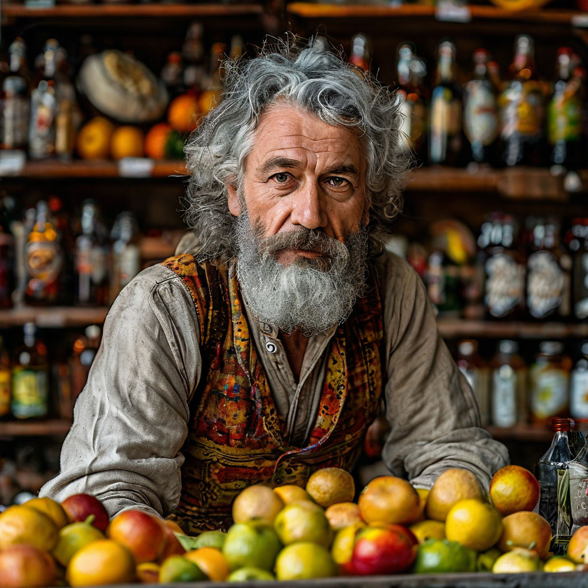

Стоит как-то Штирлиц возле банка, покуривает.
Вдруг на него нагадил голубь. " К кредиту..." - подумал Штирлиц
Про образовательный кредит ЗУ, мемуары Штирлица
Образовательный кредит в ЗАТ-Банке

ЗАТ-Банк (Заборостроительное акционерное товарищество) основан в Чехословакии в эпоху дефицита гвоздей. Это самый старый и популярный банк в Прибалтике, известный своими инновациями в финансовой сфере, такими как выпуск кредитных карт из переработанной туалетной бумаги, создание первой гвоздевой биржи и разработка программы "Сидровый капитал" для поддержки малого бизнеса. Основатель — Олег Заборов, бывший торговец грушевым сидром (по неизвестным причинам, после ухода Олега с рынка, в России пропал Икеевский сидр, а с ним и сама Икея). В один момент великий бизнесмен понял, что гвозди — это валюта будущего, способная выдержать любые кризисы. Именно он придумал выпускать кредитные карточки из 100% переработанной туалетной бумаги, чтобы экономить ресурсы и поддерживать экологию. Говорят, первые клиенты получали бонусы в виде бесплатного грушевого сидра и гвоздей на сдачу.
Стоимость обучения: 7000 акций Трансаэро в год
Акции Трансаэро — финансовый актив с уникальной надёжностью, обеспеченный обещаниями светлого будущего и нерушимостью бренда.
Выдача акций: после зачисления на курс студент получает сертификат акционера с правом участия в ежегодном собрании акционеров, если таковое состоится.
Почему это надёжно: Акции Трансаэро — это символ веры в перспективы авиаперевозок, они остаются стабильными, поскольку уже ничего не может ухудшить их положение.
Получи грант на обучение
До 100% покрытия стоимости обучения. Рассчитывается по сложной формуле, известной только Олегу Заборову (и его коту).
Специальные Мероприятия
Моментальное повышение гранта
Участие в вузовских квестах, таких как "Разбери самолет Трансаэро за час" или "Поймай сбежавший гвоздь". Каждое мероприятие даёт +5% к гранту.
Забей-Game
Система гвоздеподсчета (от 0 до 10 гвоздей, 1 гвоздь - 10 очков)
Награды:
Бокс с мерчем вуза — символ мужества и стойкости, вручается за 50 очков. Содержит фирменную футболку с логотипом университета, кружку "Я люблю заборы", календарь с лучшими заборами года, блокнот "Записки строителя", наклейки с мотивационными цитатами от Олега Заборова, а также многофункциональный строительный инструмент (монетка образца доореволюционной России).
Строительная каска из Леруа — для тех, кто готов к любым заборным испытаниям, вручается за 60 очков.
За 100 очков выдаются:
Кредитная карточка из переработанной туалетной бумаги
Пропуск в университет
Скидка -15% на обучение
Возможность выезжать с ректором на шашлыки — награда для тех, кто точно знает, как вести переговоры у мангала.